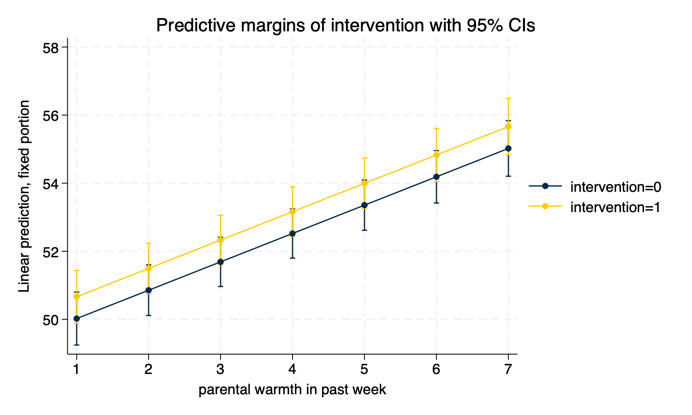

Simple Linear Fit (twoway lfit y x)
twoway lfit outcome warmth
graph export mylinear.png, width(1500) replace
twoway lfit y x)twoway lfit outcome warmth
graph export mylinear.png, width(1500) replace
twoway lfitci y x)twoway lfitci outcome warmth
graph export mylfitci.png, width(1500) replace
twoway (scatter y x) (lfit y x))twoway (scatter outcome warmth, mcolor(%30)) (lfit outcome warmth)
graph export myscatterlinear.png, width(1500) replace
spagplot y x, id(group))spagplot outcome warmth, id(country)
graph export myspaghetti.png, width(1500) replace
twoway y x, by(group))Small Multiples, showing a separate graph for each group in the data, are an increasingly popular data visualization technique. Below, I build a small multiples graph using the by option in Stata. I use the aspect option to adjust the aspect ratio of the graph for better visual presentation.
twoway (scatter outcome warmth, mcolor(%30)) ///
(lfit outcome warmth), ///
by(country) aspect(1)
graph export mysmallmultiples.png, width(1500) replace
At times, we may have too many Level 2 units to effectively display them on a spaghetti plot, or using small multiples. If this is the case, we may need to randomly sample Level 2 units. This can be difficult to accomplish as our standard sample command operates on each row, or on Level 1 units.
We can accomplish random sampling at Level 2, with a little bit of code.
set seed 3846 // random seed for reproducibility
gen randomid = runiform() // generate a random id variable
* by country (i.e. by Level 2 unit) replace the randomid
* with the first randomid for that country (Level 2 unit)
* so that every person in that country has the same random id
bysort country: replace randomid = randomid[1]
summarize randomid // descriptive statistics for random id
twoway (scatter outcome warmth, mcolor(%30)) /// scatterplot
(lfit outcome warmth) /// linear fit
if randomid < .5, /// only use a subset of randomids
by(country) aspect(1) // by country
quietly: graph export mysmallmultiples2.png, width(1500) replace(2,970 real changes made)
Variable | Obs Mean Std. dev. Min Max
-------------+---------------------------------------------------------
randomid | 3,000 .6174022 .2374704 .0733026 .9657055
A sometimes unacknowledged point is that graphs–unless we take steps to correct this–reflect unadjusted, or bivariate associations. We may sometimes wish to develop a graphs that reflect the adjusted or predicted estimates from our models.
predict)predict generates a predicted value for every observation in the data.
In multilevel models, prediction is a complex question. Prediction may–or may not–incorporate the information from the random effects. The procedures below outline graphs that incorporate predictions using the random effects, by using the
predict ..., fittedsyntax.
mixed outcome warmth physical_punishment i.intervention || country: // estimate MLMPerforming EM optimization ...
Performing gradient-based optimization:
Iteration 0: Log likelihood = -9628.1621
Iteration 1: Log likelihood = -9628.1621
Computing standard errors ...
Mixed-effects ML regression Number of obs = 3,000
Group variable: country Number of groups = 30
Obs per group:
min = 100
avg = 100.0
max = 100
Wald chi2(3) = 370.90
Log likelihood = -9628.1621 Prob > chi2 = 0.0000
-------------------------------------------------------------------------------------
outcome | Coefficient Std. err. z P>|z| [95% conf. interval]
--------------------+----------------------------------------------------------------
warmth | .8330937 .0574809 14.49 0.000 .7204332 .9457543
physical_punishment | -.9937819 .0798493 -12.45 0.000 -1.150284 -.8372801
1.intervention | .6406043 .2175496 2.94 0.003 .214215 1.066994
_cons | 51.65238 .4664841 110.73 0.000 50.73809 52.56668
-------------------------------------------------------------------------------------
------------------------------------------------------------------------------
Random-effects parameters | Estimate Std. err. [95% conf. interval]
-----------------------------+------------------------------------------------
country: Identity |
var(_cons) | 3.371762 .9613269 1.928279 5.895816
-----------------------------+------------------------------------------------
var(Residual) | 35.0675 .910002 33.32853 36.89721
------------------------------------------------------------------------------
LR test vs. linear model: chibar2(01) = 204.14 Prob >= chibar2 = 0.0000
predict outcome_hat, fitted // predict yhat (`fitted` uses fixed AND random effects)twoway Syntaxtwoway (scatter outcome_hat warmth, mcolor(%30)) (lfit outcome_hat warmth)
graph export mypredictedvalues.png, width(1500) replace
twoway (lfit outcome_hat warmth)
graph export mypredictedvalues2.png, width(1500) replace

spagplot outcome_hat warmth, id(country)
graph export myspaghetti2.png, width(1500) replace
margins and marginsplotIn contrast to predict, which generates a predicted value for every observation in the data, margins generates predicted values at specific values of certain variables.
mixed outcome warmth physical_punishment i.intervention || country: // estimate MLMPerforming EM optimization ...
Performing gradient-based optimization:
Iteration 0: Log likelihood = -9628.1621
Iteration 1: Log likelihood = -9628.1621
Computing standard errors ...
Mixed-effects ML regression Number of obs = 3,000
Group variable: country Number of groups = 30
Obs per group:
min = 100
avg = 100.0
max = 100
Wald chi2(3) = 370.90
Log likelihood = -9628.1621 Prob > chi2 = 0.0000
-------------------------------------------------------------------------------------
outcome | Coefficient Std. err. z P>|z| [95% conf. interval]
--------------------+----------------------------------------------------------------
warmth | .8330937 .0574809 14.49 0.000 .7204332 .9457543
physical_punishment | -.9937819 .0798493 -12.45 0.000 -1.150284 -.8372801
1.intervention | .6406043 .2175496 2.94 0.003 .214215 1.066994
_cons | 51.65238 .4664841 110.73 0.000 50.73809 52.56668
-------------------------------------------------------------------------------------
------------------------------------------------------------------------------
Random-effects parameters | Estimate Std. err. [95% conf. interval]
-----------------------------+------------------------------------------------
country: Identity |
var(_cons) | 3.371762 .9613269 1.928279 5.895816
-----------------------------+------------------------------------------------
var(Residual) | 35.0675 .910002 33.32853 36.89721
------------------------------------------------------------------------------
LR test vs. linear model: chibar2(01) = 204.14 Prob >= chibar2 = 0.0000margins
margins intervention, at(warmth = (1 2 3 4 5 6 7)) // predictive *margins*Predictive margins Number of obs = 3,000
Expression: Linear prediction, fixed portion, predict()
1._at: warmth = 1
2._at: warmth = 2
3._at: warmth = 3
4._at: warmth = 4
5._at: warmth = 5
6._at: warmth = 6
7._at: warmth = 7
----------------------------------------------------------------------------------
| Delta-method
| Margin std. err. z P>|z| [95% conf. interval]
-----------------+----------------------------------------------------------------
_at#intervention |
1 0 | 50.02222 .3966755 126.10 0.000 49.24475 50.79969
1 1 | 50.66283 .3955286 128.09 0.000 49.88761 51.43805
2 0 | 50.85532 .3788571 134.23 0.000 50.11277 51.59786
2 1 | 51.49592 .3789096 135.91 0.000 50.75327 52.23857
3 0 | 51.68841 .3692182 139.99 0.000 50.96476 52.41207
3 1 | 52.32902 .370554 141.22 0.000 51.60274 53.05529
4 0 | 52.52151 .3684014 142.57 0.000 51.79945 53.24356
4 1 | 53.16211 .3710204 143.29 0.000 52.43492 53.8893
5 0 | 53.3546 .376464 141.73 0.000 52.61674 54.09246
5 1 | 53.9952 .3802764 141.99 0.000 53.24988 54.74053
6 0 | 54.18769 .3928599 137.93 0.000 53.4177 54.95768
6 1 | 54.8283 .3977088 137.86 0.000 54.0488 55.60779
7 0 | 55.02079 .4166062 132.07 0.000 54.20425 55.83732
7 1 | 55.66139 .4223062 131.80 0.000 54.83369 56.4891
----------------------------------------------------------------------------------marginsplotmarginsplot // plot of predicted values
graph export mymarginsplot.png, width(1500) replace
twoway ...)As another possibility, we may wish to show more of the variation, by showing the variation in the independent variable and the dependent variable along with a scatterplot and linear fit. This is a complex graph and requires a little bit of manual programming in Stata.
You could also investigate the user written program
binscatterhist(ssc install binscatterhist) which produces a similar looking graph, and automates much of this work.
kdensity ...)We generate the density for warmth at only a few points (
n(8)) since this variable has relatively few categories.
kdensity warmth, generate(warmth_x warmth_d) n(8) // manually generate outcome densities
kdensity outcome, generate(outcome_y outcome_d) // manually generate outcome densitiesYou may have to experiment with the scaling and moving factors.
replace warmth_d = 100 * warmth_d // rescale the density so it plots well
replace outcome_d = 5 * outcome_d - .5 // rescale AND MOVE the density so it plots well
label variable outcome_y "density: beneficial outcome" // relabel y variable(8 real changes made)
(50 real changes made)twoway ...)You may have to experiment with whether scatterplots or line plots work best for displaying the x and y densities.
twoway (scatter outcome warmth, mcolor(%10)) /// scatterplot w some transparency
(lfit outcome warmth) /// linear fit
(line warmth_d warmth_x) /// line plot of x density
(line outcome_y outcome_d), /// line plot of y density (note flipped order)
title("Outcome by Warmth") /// title
ytitle("beneficial outcome") /// manual ytitle
xtitle("parental warmth") /// manual xtitle
legend(position(6) rows(2) ) /// legend at bottom; 2 rows
xlabel(0 1 2 3 4 5 6 7) /// manual x labels
name(mynewscatter, replace)
graph export mynewscatter.png, width(1500) replace